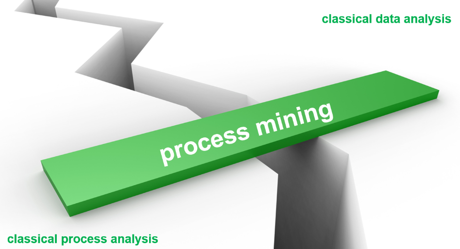
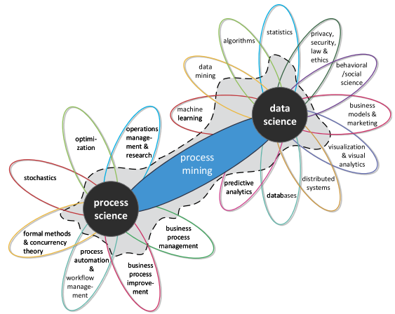
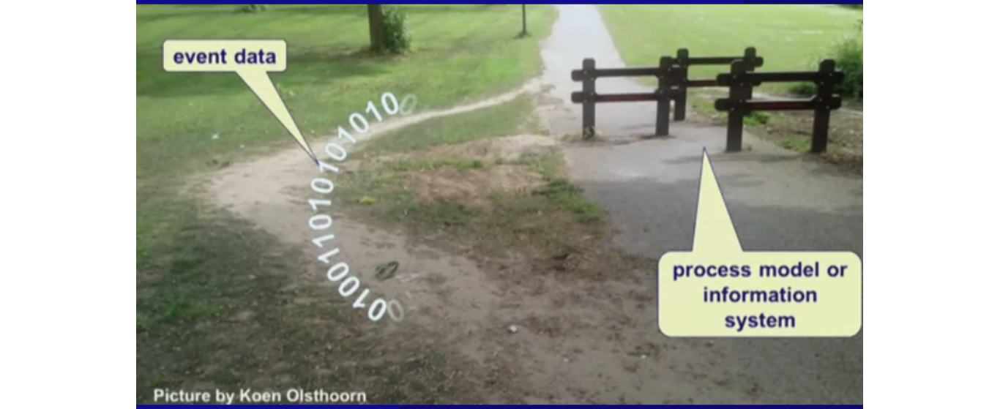
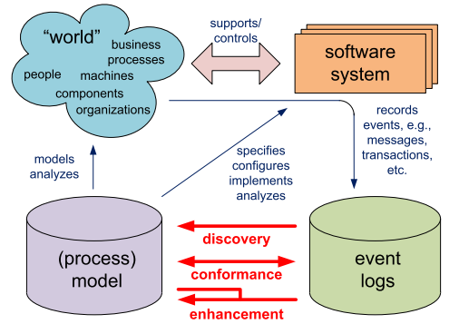
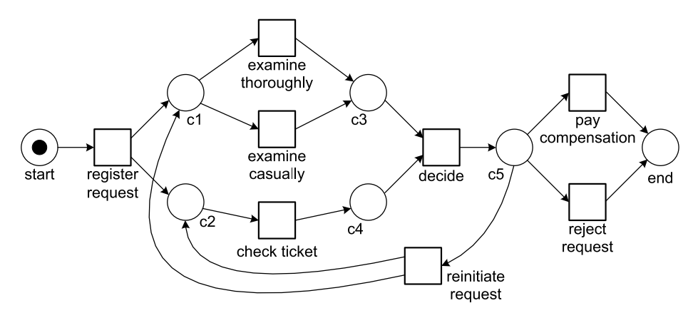
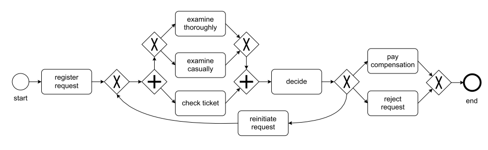
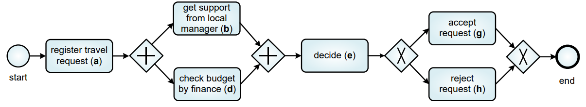
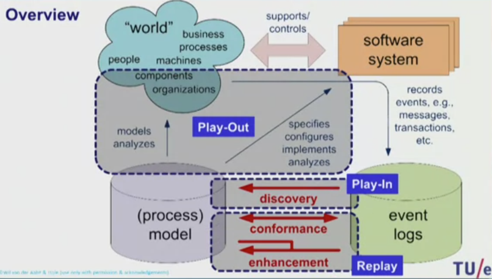

Mineração de Processos - Introdução#

A mineração de processos reúne a análise de processos tradicional baseada em modelos e técnicas de análise centradas em dados. A mineração de processos busca o confronto entre dados de eventos (ou seja, comportamento observado) e modelos de processos (feitos à mão ou descobertos automaticamente). As abordagens tradicionais da ciência de dados tendem a ser agnósticas em relação a processos. Mineração de dados, estatística e técnicas de aprendizado de máquina não consideram modelos de processos de ponta a ponta.
A mineração de processos, ou process mining, é um área que combina modelos de processos de négocio com a Ciência de Dados, ou seja, a partir de event logs ocorre a extração do modelo dos processos ou a análise de desempenho, gargalos, conformidade e etc.
Desse modo, a mineração de processos é um elo crucial entre a ciência de dados, que lida com a análise e interpretação dos dados, e o estudo de processos, que foca na melhoria contínua e na eficiência organizacional. Ao aplicar métodos de análise avançada, como aprendizado de máquina e visualização de dados, ela proporciona uma visão detalhada e realista de como os processos funcionam, ajudando as empresas a otimizá-los com base em dados reais.

“Process mining adds the process perspective to machine learning and data mining. Process mining seeks the confrontation between event data (i.e., observed behavior) and process models (hand-made or discovered automatically). Event data are related to explicit process models, e.g., Petri nets or BPMN models. For example, process models are discovered from event data or event data are replayed on models to analyze compliance and performance” (van der Aalst, 2016).
Melhoria de Processos na Construção#
Mapeamento detalhado do processo:
Identificar todas as etapas do processo de construção, desde a concepção do projeto até a entrega da obra.Análise das interdependências:
Entender como cada etapa do processo se relaciona com as outras.Otimização do fluxo de trabalho:
Eliminar atividades que não agregam valor, reduzir o tempo de espera entre as etapas e otimizar a utilização de recursos.Monitoramento contínuo:
Acompanhar o desempenho do processo e realizar ajustes conforme necessário.
Em resumo, ao adotar uma visão de ponta a ponta, as empresas de construção podem otimizar seus processos, reduzir custos, melhorar a qualidade e aumentar a satisfação dos clientes.
A ideia de van der Aalst de que “o processo é estúpido” serve como um lembrete de que a eficiência e a qualidade de um projeto dependem da otimização do processo como um todo, e não apenas de cada tarefa individual.

O valor dos modelos é limitado se pouca atenção for dada ao alinhamento do modelo e da realidade, ou seja, as pessoas envolvidas precisam confiar neles. Por exemplo, não faz sentido conduzir experimentos de simulação enquanto se usa um modelo que assume uma versão idealizada do processo real.
Como Aplicar#
Conforme mencionado acima, a mineração de processos estabelece links entre os processos reais e seus dados, por um lado, e modelos de processos, por outro lado. Ou seja, mineração de processos conecta o mundo real, sistemas de software, registros de eventos (event logs) e modelos de processos para analisar e aprimorar processos organizacionais.

De fato, no mundo real, pessoas, máquinas e organizações executam atividades que são apoiadas e controladas por sistemas de software, os quais registram eventos, como transações e mensagens, em logs.
Esses registros são utilizados para criar ou ajustar modelos de processos por meio de três abordagens principais: descoberta, que identifica o processo real a partir dos dados; conformidade, que verifica se a execução está alinhada ao modelo projetado; e aprimoramento, que ajusta o modelo ou o processo com base nos dados reais. Esse ciclo contínuo visa entender, monitorar e melhorar a eficiência e a conformidade dos processos.
Assim, para aplicar mineração de processos em um caso de uso específico, é essencial entender o contexto, os objetivos e os dados disponíveis.
O levantamento de requisitos pode ser dividido em: entendimento do processo, definição de objetivos e dados e ferramentas. Aqui estão algumas sugestões para esse levantamento:
1. Entendimento do Processo#
Neste item, deve-se mapear o contexto e o funcionamento do processo. Para tanto, deve-se buscar respostas para:
Qual é o processo que será analisado?
Exemplo: É um processo de vendas, atendimento ao cliente, produção, etc.?
Quais são as entradas, atividades e saídas do processo?
O que inicia o processo? Como ele termina?
Quais são as principais etapas ou atividades envolvidas?
Liste as tarefas ou fluxos gerais (ex.: aprovação, conferência, execução).
Existem variações conhecidas no processo?
O processo segue sempre o mesmo fluxo ou tem desvios frequentes?
Quais são os objetivos principais desse processo?
É maximizar a eficiência? Garantir conformidade? Melhorar a experiência do cliente?
2. Definição de Objetivos#
Para identificar o que a mineração de processos deve alcançar, deve-se questionar:
Qual problema específico estamos tentando resolver?
Exemplo: Reduzir atrasos, eliminar gargalos, ou melhorar a qualidade?
Quais indicadores de desempenho (KPIs) devem ser analisados?
Exemplos: Tempo de ciclo, custo, taxa de conclusão, erros.
Estamos buscando otimizar, monitorar ou auditar o processo?
O foco é eficiência, detecção de desvios ou conformidade com regras?
Quais seriam os benefícios esperados com a análise?
Exemplo: Identificar gargalos ou eliminar atividades que não agregam valor.
Quais decisões dependem das descobertas da mineração de processos?
Exemplo: Redesenho do fluxo, implementação de automação ou treinamento.
3. Dados e Ferramentas#
Para garantir que os dados necessários estão disponíveis e que as ferramentas corretas serão usadas, deve-se responder a:
De onde vêm os dados do processo?
Exemplo: Logs de sistemas ERP, CRM, sistemas de ticket, etc.
Os dados contêm as informações mínimas necessárias?
Devem incluir: caso (ID único do processo), atividade (ações realizadas) e timestamp (tempo de execução).
Quais ferramentas de mineração de processos serão usadas?
Exemplo: Celonis, Disco, ProM, etc.
Existem problemas conhecidos com os dados?
Exemplo: Inconsistência, dados incompletos ou falta de integração entre sistemas.
Quem são os stakeholders que devem validar as descobertas?
Exemplo: Gerentes de processo, analistas de negócio, TI.
Exemplo de processo de aprovação de empréstimos#
Suponha que você esteja analisando um processo de aprovação de empréstimos em um banco. As perguntas poderiam ser:
Entendimento do Processo
Como um cliente solicita o empréstimo?
Quais departamentos participam da aprovação?
Existe um prazo ideal para concluir a análise?
Definição de Objetivos
Estamos buscando reduzir o tempo médio de aprovação?
Queremos identificar gargalos específicos, como espera por documentos?
Dados e Ferramentas
Os sistemas bancários registram todas as interações?
As ferramentas disponíveis permitem conectar os logs das diferentes etapas?
Modelagem de processos#
Os modelos desempenham um papel importante para projetar processos e introduzir novos sistemas de informação. Normalmente, dois tipos de modelos são usados: (a) modelos informais e (b) modelos formais (também chamados de modelos “executáveis”). Os modelos informais são usados para discussão e documentação, enquanto os modelos formais são usados para análise ou execução real do processo.
A Figura seguinte modela um processo como uma rede de Petri.

A Figura seguinte modela o mesmo processo em termos de um chamado diagrama BPMN.

Event log#
Event log ou registros de evento são tabelas que contém as informações de execução dos processos. Nesta tabela, cada linha representa um evento e contém ao menos três colunas essenciais, sendo elas
case id - contém um identificador da instância do processo ao qual o evento pertence;
activity - a atividade que foi realizada no evento;
timestamp - a data e hora em que o evento ocorreu (inicio, fim ou outro marco temporal).
student name/caseId |
course name/activity |
exam date/timestamp |
mark/other data |
|---|---|---|---|
Peter Jones |
Business Information Systems |
16-1-2014 |
8 |
Sandy Sott |
Business Information Systems |
16-1-2014 |
5 |
Bridget White |
Business Information Systems |
16-1-2014 |
9 |
Sandy Scott |
BPM Systems |
17-1-2014 |
8 |
Bridget White |
BPM Systems |
17-1-2014 |
7 |
Sandy Scott |
Process Mining |
20-1-2014 |
9 |
John Anderson |
Process Mining |
20-1-2014 |
6 |
Podem também ter outras colunas, como resources, que indicam o recurso ou pessoa responsável pela execução da atividade, além de quaisquer outras informações relevantes, tais como o produto e quantidade associada. Nem sempre a tabela contém uma única coluna de timestamp. Em alguns casos, pode haver colunas separadas para o início e o fim de cada evento.
order number / caseId |
activity |
timestamp |
user / resource |
product / other data |
quantity / other data |
|---|---|---|---|---|---|
9901 |
register order |
22-1-2014#09.15 |
Sara Jones |
iPhone5s |
1 |
9902 |
register order |
22-1-2014#09.18 |
Sara Jones |
iPhone5s |
2 |
9901 |
check stock |
22-1-2014#09.49 |
Pete Scott |
iPhone5s |
1 |
9901 |
ship order |
22-1-2014#10.11 |
Sue Fox |
iPhone5s |
1 |
9901 |
handle payment |
22-1-2014#10.41 |
Carol Hope |
iPhone5s |
1 |
Tipos de mineração de processo#
Na mineração de processos, os tipos Play-in, Play-out e Replay referem-se a diferentes maneiras de interagir com e analisar os processos dentro de um sistema.

Play In / Descoberta#
Neste tipo geramos um modelo de processo a partir de um event log. Existem diversos algoritmos que fazem isso.
“The first type of process mining is discovery. A discovery technique takes an event log and produces a model without using any a-priori information. An example is the α-algorithm [157] that will be described in Chap. 6. This algorithm takes an event log and produces a Petri net explaining the behavior recorded in the log” (van der Aalst, 2016).
Por exemplo, considere a seguinte sequência de letras, onde cada letra representa um evento:
abdeg
adbeg
adbeh
abdeh A partir delas podemos determinar o seguinte modelo:

Play Out / Conformidade#
A ideia é gerar um comportamento, event log, a partir de um modelo.
“The second type of process mining is conformance. Here, an existing process model is compared with an event log of the same process. Conformance checking can be used to check if reality, as recorded in the log, conforms to the model and vice versa” (van der Aalst, 2016).
Por exemplo, considere o modelo abaixo
Podemos a partir desse modelo gerar o seguinte event log:
case |
activity |
timestamp |
resource |
|---|---|---|---|
235 |
register travel request (a) |
18-8-2014:9.15 |
John |
235 |
get support from local manager (b) |
18-8-2014:9.25 |
Mary |
235 |
check budget by finance (d) |
19-8-2014:8.55 |
John |
235 |
decide (e) |
19-8-2014:9.36 |
Sue |
235 |
accept request (g) |
19-8-2014.9.48 |
Mary |
Replay / Aprimoramento#
Por fim, no tipo replay nos buscamos verificar a conformidade do modelo de processos gerado ou já existente com a realidade. Desta forma podemos descobrir gargalos, processos sendo realizados fora de ordem, e outros desvios de desempenho.
“The third type of process mining is enhancement. Here, the idea is to extend or improve an existing process model using information about the actual process recorded in some event log. Whereas conformance checking measures the alignment between model and reality, this third type of process mining aims at changing or extending the a-priori model” (van der Aalst, 2016).
